UNIT 16 · VOCABULARY
學校
School
76 個單字聽・唸・用
本單元單字一覽
學校、教室用品、科目、上課會用到的動作，共 76 個字。注意科目不可數、不規則動詞和 -y 結尾的複數。
elementary schooljunior high schoolschoolsenior high schoolclassroomgymplaygroundlibraryclassseesawslideblackboardbookchalkdictionaryenvelopeeraserglassesgluelettermapmarkernotebookpagepaperpenpencilpicturepostcardpresentrulerworkbookcourseartChineseEnglishhistorylanguagemathmusicPEscienceclassmatefriendstudentteacheransweraskexplainfaillearnlistenmarkpasspracticepreparereadrepeatsayspeakspellstudytalkteachunderstandwriteexamplegradehomeworkknowledgelessonproblemquestionquizstorytest
每個字都有 🔊，先聽發音、跟著唸，再看例句。
單字 1–4

elementary school
小學n.
My little brother is in elementary school.
我弟弟讀小學。
我弟弟讀小學。

junior high school
國中n.
I am a junior high school student.
我是國中生。
我是國中生。
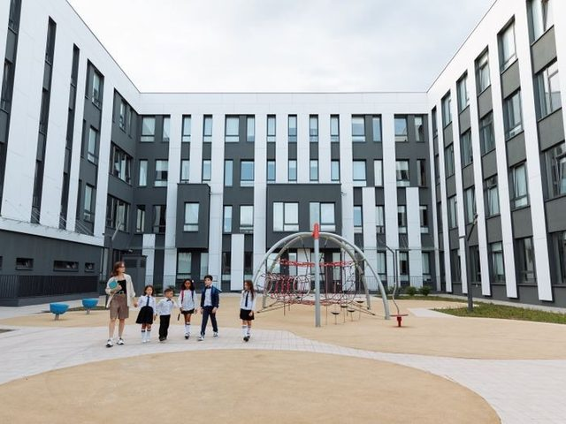
school
學校n.
I go to school by bus.
我搭公車上學。
我搭公車上學。

senior high school
高中n.
My sister goes to senior high school.
我姊姊讀高中。
我姊姊讀高中。
單字 5–8

classroom
教室n.
Our classroom is on the third floor.
我們的教室在三樓。
我們的教室在三樓。
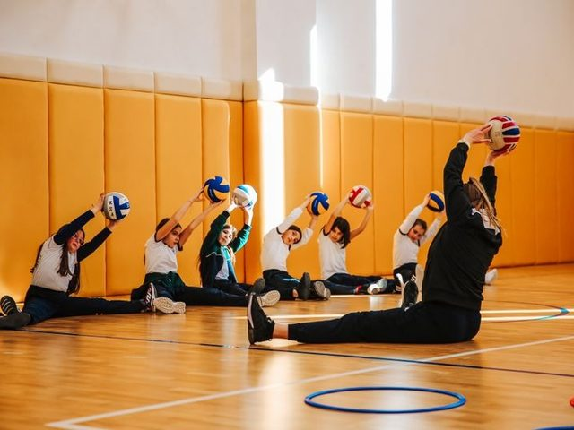
gym
體育館；健身房n.
We play volleyball in the gym when it rains.
下雨時我們在體育館打排球。
下雨時我們在體育館打排球。
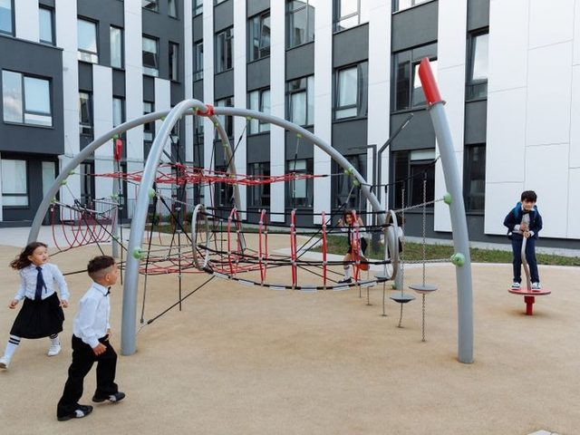
playground
操場；遊樂場n.
The kids are running on the playground.
孩子們在操場上跑。
孩子們在操場上跑。
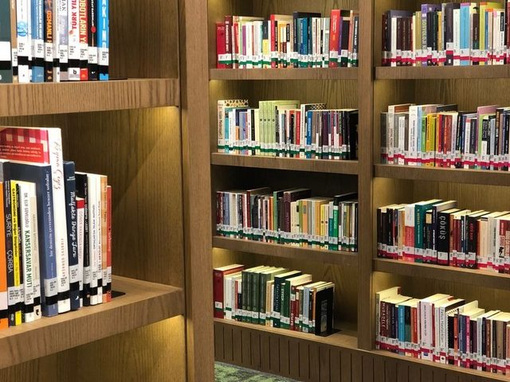
library
圖書館n.
Please be quiet in the library.
在圖書館裡請保持安靜。
在圖書館裡請保持安靜。
單字 9–12
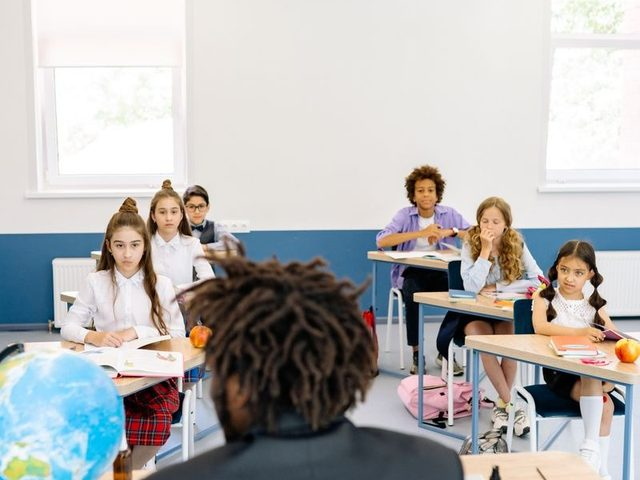
class
班級；課n.
We have English class every morning.
我們每天早上都有英文課。
我們每天早上都有英文課。
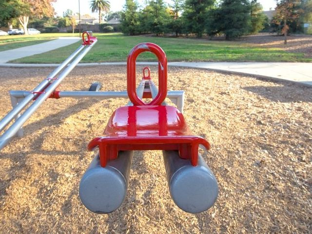
seesaw
蹺蹺板n.
Two children are playing on the seesaw.
兩個小孩在玩蹺蹺板。
兩個小孩在玩蹺蹺板。
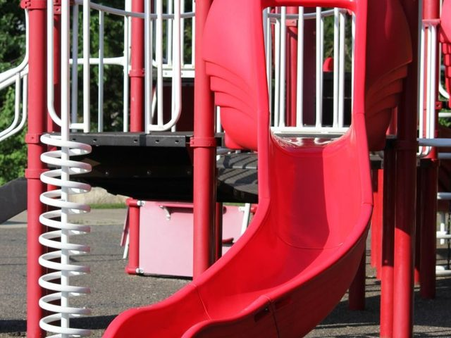
slide
溜滑梯；滑動n./v.
The little girl went down the slide.
小女孩從溜滑梯滑下來。
小女孩從溜滑梯滑下來。
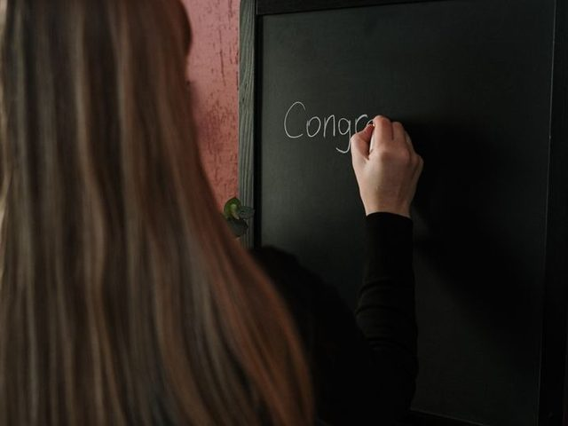
blackboard
黑板n.
The teacher wrote the date on the blackboard.
老師在黑板上寫日期。
老師在黑板上寫日期。
單字 13–16
book
書n.
I borrowed three books from the library.
我從圖書館借了三本書。
我從圖書館借了三本書。
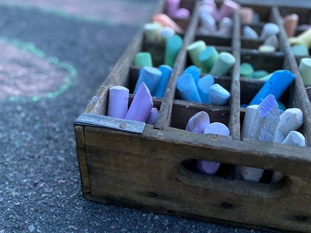
chalk
粉筆n.
Can I have a piece of chalk?
可以給我一根粉筆嗎？
可以給我一根粉筆嗎？
📖
dictionary
字典n.
Look up the word in the dictionary.
在字典裡查這個字。
在字典裡查這個字。
envelope
信封n.
Put the letter in the envelope.
把信放進信封裡。
把信放進信封裡。
單字 17–20
🧽
eraser
橡皮擦；黑板擦n.
Can I borrow your eraser?
我可以借你的橡皮擦嗎？
我可以借你的橡皮擦嗎？
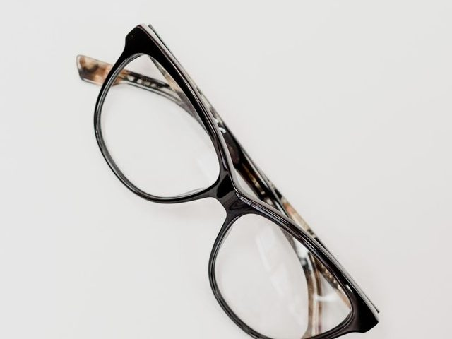
glasses
眼鏡n.
Grandpa wears glasses when he reads.
爺爺看書時戴眼鏡。
爺爺看書時戴眼鏡。
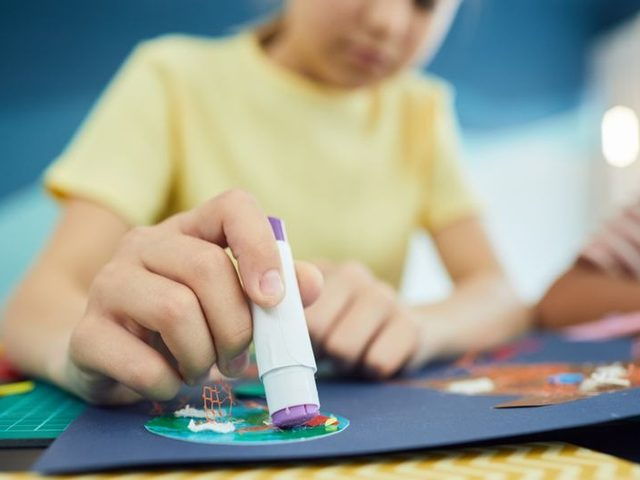
glue
膠水n.
Use some glue to stick the photo on the card.
用一點膠水把照片黏在卡片上。
用一點膠水把照片黏在卡片上。
letter
信；字母n.
I wrote a letter to my pen pal.
我寫了一封信給我的筆友。
我寫了一封信給我的筆友。
單字 21–24
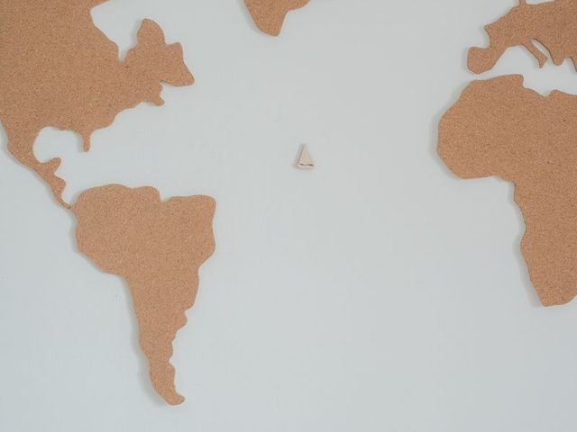
map
地圖n.
Let's find Taiwan on the map.
我們在地圖上找台灣吧。
我們在地圖上找台灣吧。
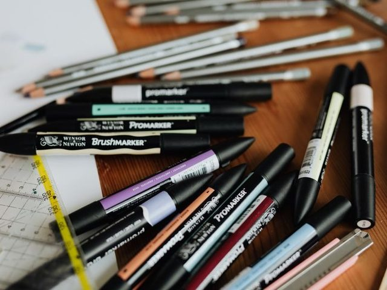
marker
麥克筆；油性筆n.
Write your name with a marker.
用麥克筆寫你的名字。
用麥克筆寫你的名字。
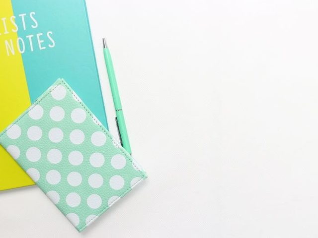
notebook
筆記本n.
Write the new words in your notebook.
把新單字寫在筆記本上。
把新單字寫在筆記本上。
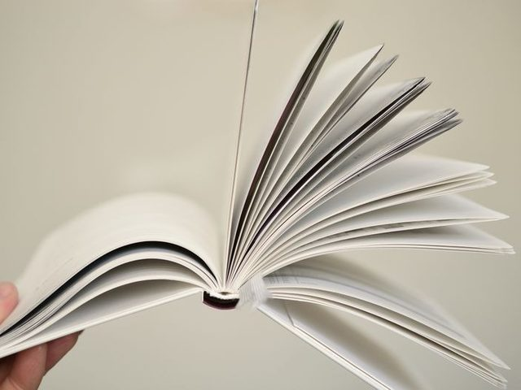
page
頁n.
Please open your books to page 25.
請把書翻到第 25 頁。
請把書翻到第 25 頁。
單字 25–28
📃
paper
紙n.
Give me a piece of paper, please.
請給我一張紙。
請給我一張紙。
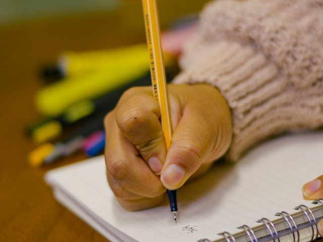
pen
原子筆；鋼筆n.
Write your answers in pen.
用原子筆寫答案。
用原子筆寫答案。
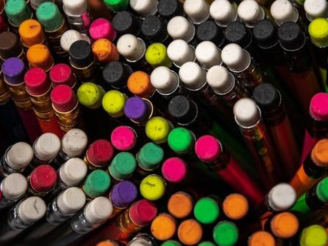
pencil
鉛筆n.
My pencil is too short to use.
我的鉛筆太短不能用了。
我的鉛筆太短不能用了。
picture
圖畫；照片n.
Let's take a picture together.
我們一起拍張照吧。
我們一起拍張照吧。
單字 29–32
postcard
明信片n.
I sent Grandma a postcard from Japan.
我從日本寄了一張明信片給奶奶。
我從日本寄了一張明信片給奶奶。
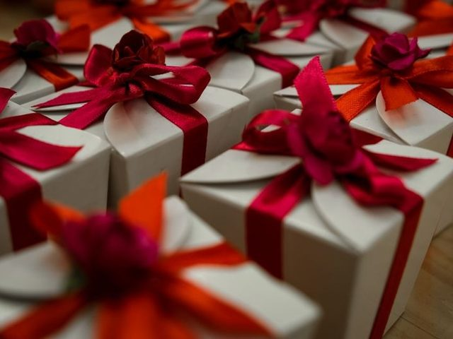
present
禮物n.
Thank you for the birthday present!
謝謝你的生日禮物！
謝謝你的生日禮物！
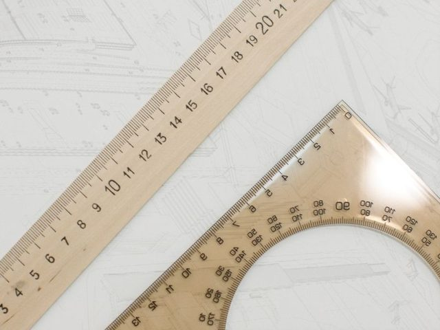
ruler
尺n.
Draw a straight line with a ruler.
用尺畫一條直線。
用尺畫一條直線。
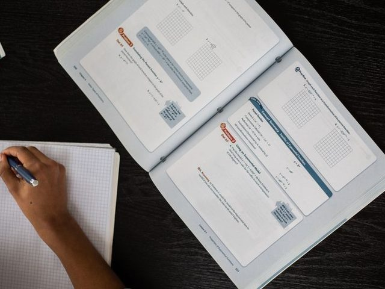
workbook
習作；練習本n.
Finish page 12 in your workbook.
把習作第 12 頁寫完。
把習作第 12 頁寫完。
單字 33–36
📋
course
課程n.
Mom is taking a cooking course.
媽媽正在上烹飪課程。
媽媽正在上烹飪課程。
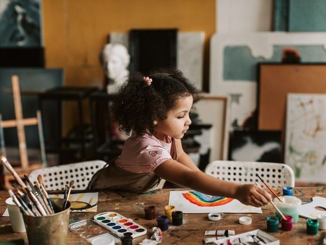
art
藝術；美術n.
We draw and paint in art class.
我們在美術課畫畫。
我們在美術課畫畫。
🀄
Chinese
中文；中國人n.
Many people around the world are learning Chinese.
世界上很多人在學中文。
世界上很多人在學中文。
🔤
English
英語n.
English is my favorite subject.
英文是我最喜歡的科目。
英文是我最喜歡的科目。
單字 37–40
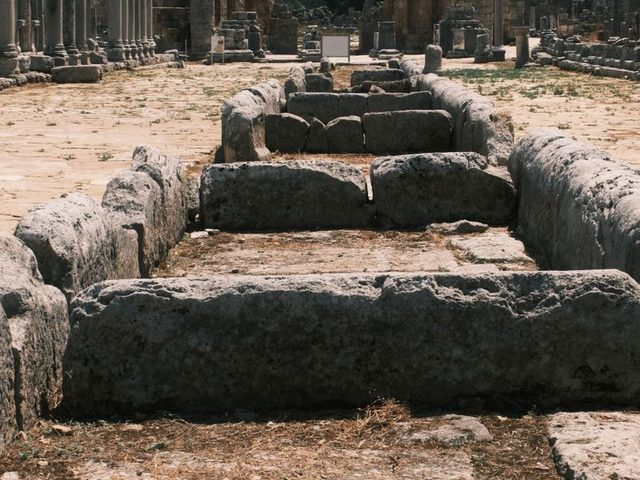
history
歷史n.
We learn about Taiwan's history in class.
我們在課堂上學台灣的歷史。
我們在課堂上學台灣的歷史。
🗣️
language
語言n.
How many languages can you speak?
你會說幾種語言？
你會說幾種語言？
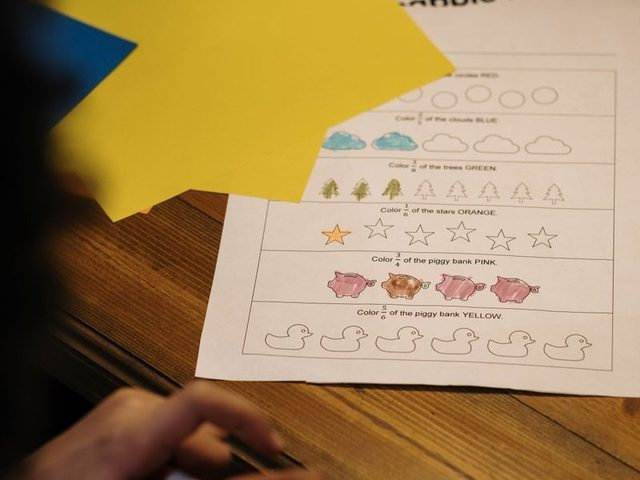
math
數學n.
I have a math test tomorrow.
我明天有數學考試。
我明天有數學考試。
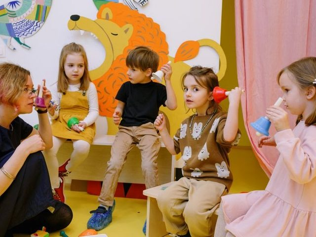
music
音樂n.
We sing songs in music class.
我們在音樂課唱歌。
我們在音樂課唱歌。
單字 41–44
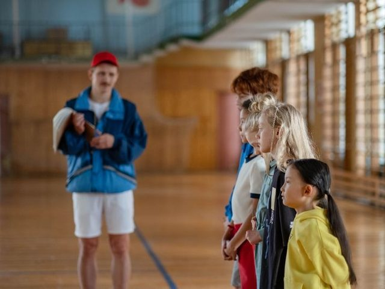
PE
體育n.
We play basketball in PE class.
我們在體育課打籃球。
我們在體育課打籃球。
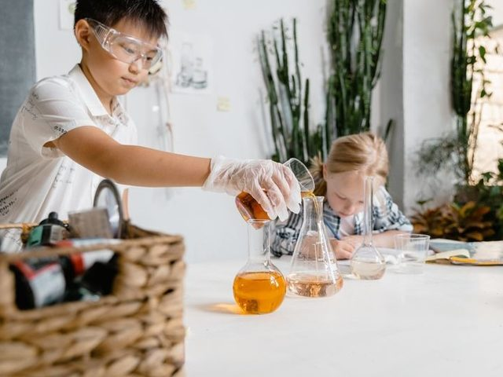
science
科學n.
We did an experiment in science class.
我們在自然課做了一個實驗。
我們在自然課做了一個實驗。
classmate
同班同學n.
Amy and I are classmates.
Amy 和我是同班同學。
Amy 和我是同班同學。
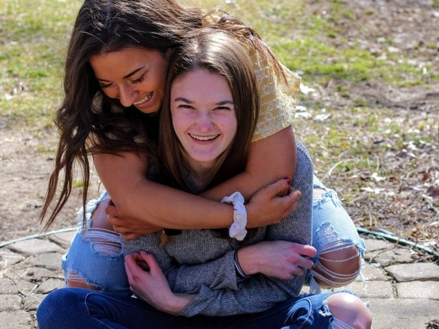
friend
朋友n.
Tom is my best friend.
Tom 是我最好的朋友。
Tom 是我最好的朋友。
單字 45–48
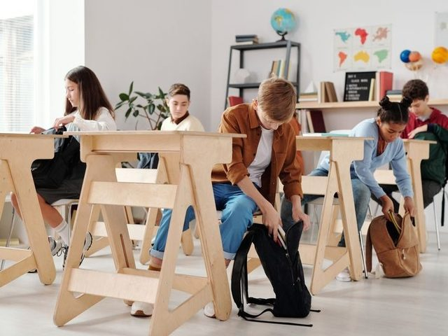
student
學生n.
There are thirty students in my class.
我們班有三十個學生。
我們班有三十個學生。
teacher
老師n.
Our English teacher is very kind.
我們的英文老師很親切。
我們的英文老師很親切。
✅
answer
答案；回答n./v.
Do you know the answer?
你知道答案嗎？
你知道答案嗎？
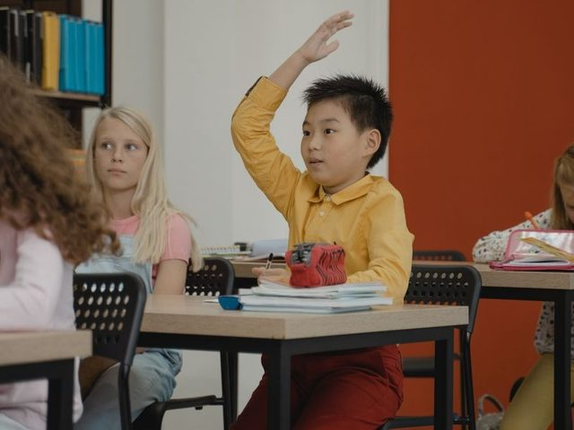
ask
問；請求v.
Can I ask you a question?
我可以問你一個問題嗎？
我可以問你一個問題嗎？
單字 49–52
💬
explain
解釋v.
Can you explain this word to me?
你可以跟我解釋這個字嗎？
你可以跟我解釋這個字嗎？
❌
fail
失敗；不及格v.
He didn't study, so he failed the test.
他沒讀書，所以考試不及格。
他沒讀書，所以考試不及格。
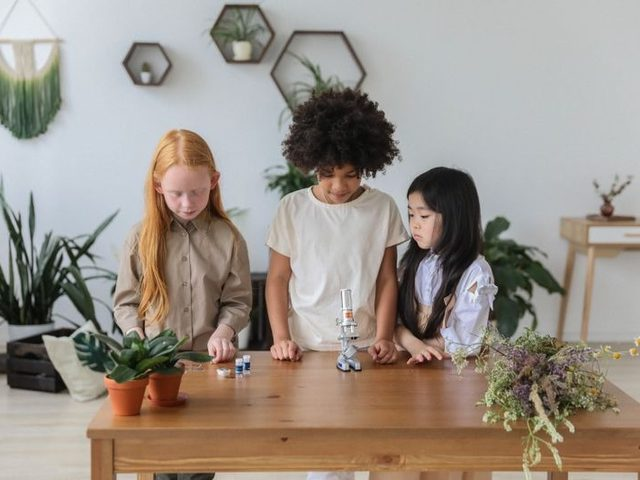
learn
學習v.
We learn new words every day.
我們每天學新單字。
我們每天學新單字。
👂
listen
聽v.
Listen to the teacher carefully.
仔細聽老師說。
仔細聽老師說。
單字 53–56
💯
mark
分數；記號n.
She got full marks on the test.
她考試拿了滿分。
她考試拿了滿分。
👍
pass
通過；及格v.
I passed the math test!
我數學考試及格了！
我數學考試及格了！
🔁
practice
練習n./v.
I practice speaking English every day.
我每天練習說英文。
我每天練習說英文。
🗂️
prepare
準備v.
We are preparing for the final exam.
我們正在準備期末考。
我們正在準備期末考。
單字 57–60
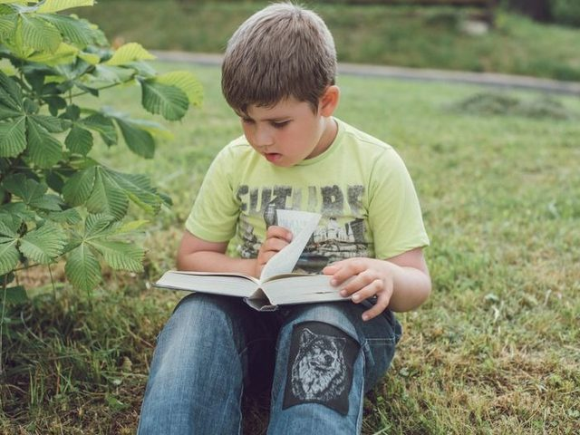
read
閱讀v.
I read a story before bed.
我睡前讀一個故事。
我睡前讀一個故事。
🔂
repeat
重複v.
Please repeat after me.
請跟著我唸一次。
請跟著我唸一次。
💬
say
說v.
What did you say?
你剛才說什麼？
你剛才說什麼？
🗣️
speak
說話；說（語言）v.
Can you speak Japanese?
你會說日文嗎？
你會說日文嗎？
單字 61–64
🔡
spell
拼（字）v.
How do you spell your name?
你的名字怎麼拼？
你的名字怎麼拼？
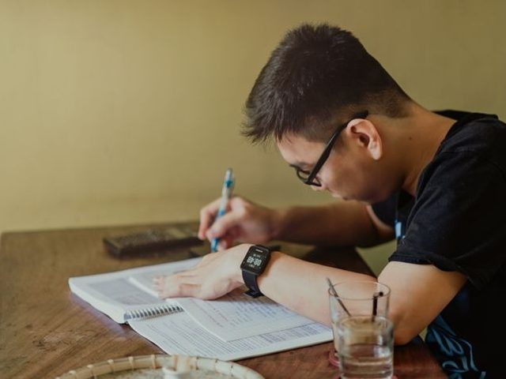
study
讀書；用功；書房v./n.
I study in the library after school.
我放學後在圖書館讀書。
我放學後在圖書館讀書。
💬
talk
談話；講話v./n.
Don't talk in class.
上課不要講話。
上課不要講話。
teach
教v.
Ms. Lin teaches us math.
林老師教我們數學。
林老師教我們數學。
單字 65–68
💡
understand
了解；懂v.
Do you understand the question?
你懂這個問題嗎？
你懂這個問題嗎？
✍️
write
寫v.
Write your name at the top of the page.
把你的名字寫在這頁最上面。
把你的名字寫在這頁最上面。
📌
example
例子n.
Can you give me an example?
你可以給我一個例子嗎？
你可以給我一個例子嗎？
7️⃣
grade
年級；成績n.
I am in the seventh grade.
我讀七年級。
我讀七年級。
單字 69–72
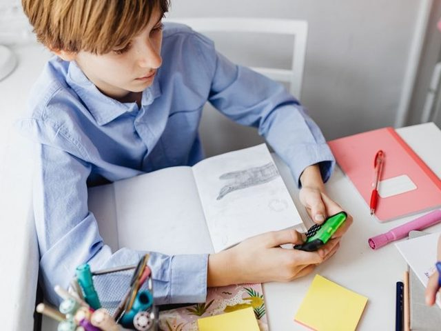
homework
家庭作業n.
I do my homework after dinner.
我晚餐後寫功課。
我晚餐後寫功課。
🧠
knowledge
知識n.
Reading gives us knowledge.
閱讀給我們知識。
閱讀給我們知識。
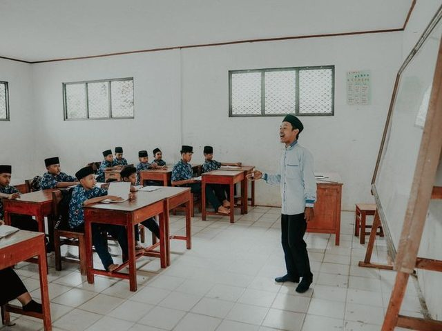
lesson
課；教訓n.
Let's start Lesson 3 today.
我們今天開始上第三課。
我們今天開始上第三課。
❓
problem
問題；難題n.
I have a problem with my computer.
我的電腦有問題。
我的電腦有問題。
單字 73–76
🙋
question
問題；疑問n.
Raise your hand if you have a question.
有問題就舉手。
有問題就舉手。
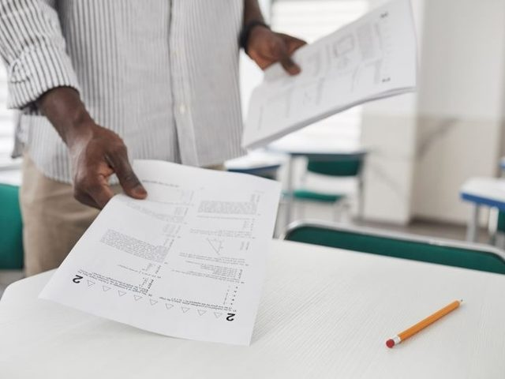
quiz
小考；測驗n.
We have a quiz every Friday.
我們每週五有小考。
我們每週五有小考。
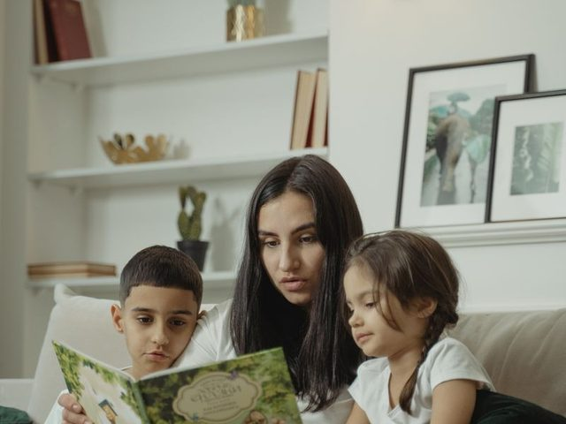
story
故事n.
Grandma told us a funny story.
奶奶跟我們講了一個好笑的故事。
奶奶跟我們講了一個好笑的故事。
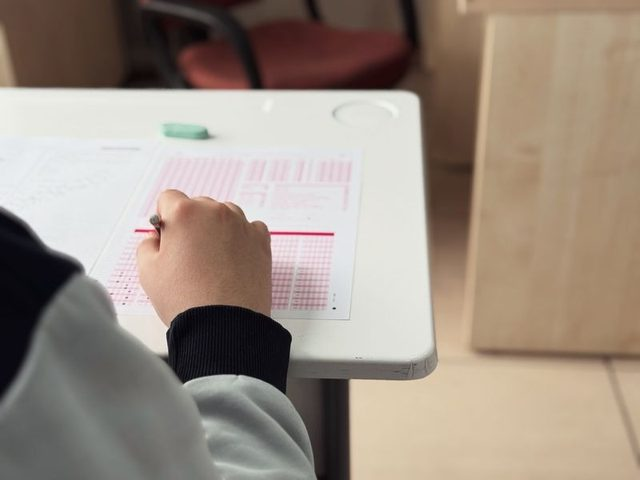
test
測驗；考試n.
Study hard for the test.
為考試好好用功。
為考試好好用功。
學校的科目（都不可數，前面不加 a）
| 英文 | 中文 | 例句 |
|---|---|---|
| English | 英語 | English is my favorite subject. |
| Chinese | 國語；中文 | We have Chinese class today. |
| math | 數學 | Math is hard for me. |
| science | 自然科學 | I like science. |
| history | 歷史 | History is interesting. |
| art / music / PE | 美術／音樂／體育 | We play games in PE class. |
語言名稱 English、Chinese 第一個字母一定大寫。
常用的不規則動詞
| 原形 | 過去式 | 過去分詞 |
|---|---|---|
| say 說 | said | said |
| speak 說（語言） | spoke | spoken |
| teach 教 | taught | taught |
| understand 了解 | understood | understood |
| write 寫 | wrote | written |
| read 讀 | read | read |
read 的過去式拼法不變，但唸成 [rɛd]。
子音 + y 結尾的複數
| 單數 | 複數 |
|---|---|
| library | libraries |
| dictionary | dictionaries |
| story | stories |
| study | studies |
子音 + y：去 y 加 -ies。另外 quiz 的複數是 quizzes（重複 z）。
快問快答：中文 → 英文
1小學elementary school
2教室classroom
3班級；課class
4書book
5橡皮擦；黑板擦eraser
6地圖map
7紙paper
8明信片postcard
快問快答：英文 → 中文
1course課程
2history歷史
3PE體育
4student學生
5explain解釋
6mark分數；記號
7read閱讀
8spell拼（字）
學完了！接下來
複習方法
review
- 回到「📗 單字卡」，按「遮中文」自己考自己
- 再按「遮英文」，看中文說出英文
- 每個例句跟著 🔊 唸一次
準備好了
- 按右上角「📝 前往測驗」
- 測驗錯的題目要訂正到全對
- 訂正完成補送 1 點